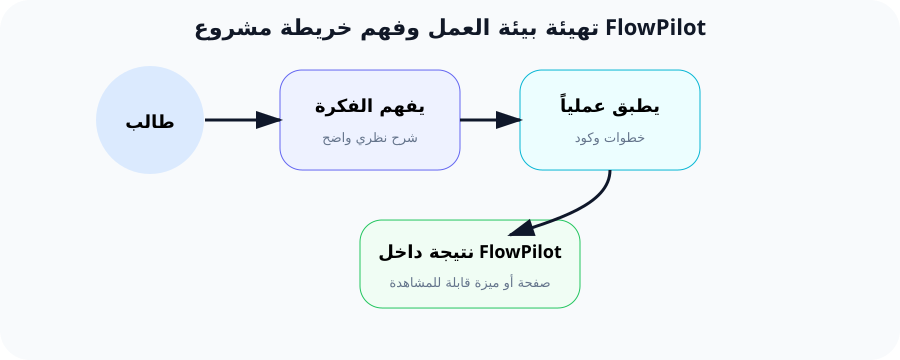

تهيئة بيئة العمل وفهم خريطة طريق مشروع FlowPilot
"قبل أن تبني ناطحة سحاب، تحتاج إلى أساس متين. هذا الدرس هو أساس رحلتك في عالم البرمجة."
لماذا هذا الدرس مهم جداً؟
تخيل أنك اشتريت سيارة رياضية رائعة. أنت متحمس جداً لتجربتها. تضع المفتاح... ولا شيء يحدث! لماذا؟ لأنك نسيت أن تملأ البنزين وتشحن البطارية. هذا بالضبط ما يحدث عندما تحاول برمجة تطبيق دون تجهيز البيئة أولاً.
بيئة العمل (Environment) هي مجموعة البرامج والأدوات المثبتة على جهاز الكمبيوتر الخاص بك والتي تسمح لك بكتابة وتشغيل التطبيقات البرمجية. في هذه الدورة، سنقوم ببناء مشروع اسمه FlowPilot - وهو تطبيق ويب متكامل لإدارة المشاريع. لكي نتمكن من بناء هذا التطبيق، نحتاج إلى تجهيز جهازنا بعدة أدوات أساسية.
بنهاية هذا الدرس، سيكون جهازك مثل صندوق أدوات مكتمل: كل أداة في مكانها الصحيح، وجاهزة للاستخدام. ستوفر على نفسك ساعات من الإحباط لاحقاً عندما تبدأ في كتابة الكود.
ما هي الأدوات التي سنستخدمها؟ شرح كل أداة بالتفصيل
دعنا نشرح كل أداة كما لو كنا في الصف الأول الابتدائي. كل مصطلح تقني سنشرحه بكلمات بسيطة:
1. PHP 8.2+
PHP هي لغة برمجة - واللغة هي وسيلة التواصل مع الكمبيوتر. مثلما تتحدث العربية للتواصل مع الناس، تستخدم PHP لإعطاء أوامر للكمبيوتر. PHP هي اللغة التي كتب بها Laravel، وهو الإطار الذي سنستخدمه لبناء الجزء الخلفي من FlowPilot.
الرقم 8.2+ يعني أننا نحتاج الإصدار 8.2 أو أحدث. كل إصدار جديد يأتي بميزات أقوى وأمان أفضل.
2. Composer
Composer هو "مدير الحزم" (Package Manager). تخيل أنك تريد بناء سيارة. هل ستصنع كل قطعة بنفسك (العجلات، المحرك، المقاعد)؟ بالطبع لا! ستشتري قطعاً جاهزة وتجمّعها. Composer يفعل نفس الشيء للبرمجة: يجلب لك قطعاً جاهزة (مكتبات برمجية) تحتاجها في مشروعك.
مثلاً: عندما نريد تثبيت Laravel، سنستخدم Composer ليقوم بتحميل كل ملفات Laravel إلى جهازنا.
3. Node.js 18+
Node.js هو بيئة تشغيل لـ JavaScript خارج المتصفح. عادةً، JavaScript تعمل فقط في المتصفح (Chrome, Firefox). لكن Node.js تسمح لـ JavaScript بالعمل على جهازك مباشرة، مما يمكننا من تشغيل أدوات بناء الواجهات مثل React و Tailwind CSS.
NPM (Node Package Manager) يأتي مع Node.js. مثل Composer لكن لمكتبات JavaScript. NPM هو مخزن ضخم لملايين الأدوات الجاهزة.
4. Git
Git هو نظام "التحكم في الإصدارات" (Version Control System). كلمة طويلة، لكن معناها بسيط: Git يسجل تاريخ مشروعك بالكامل. كل تغيير تقوم به يسجل مع timestamp وتاريخ واسم الشخص.
تخيل أنك تكتب بحثاً مهماً، وفي اليوم الأخير تكتشف أنك حذفت فقرة مهمة بالخطأ. مع Git، يمكنك العودة لأي نسخة سابقة في ثانية!
5. VS Code (محرر النصوص)
VS Code هو برنامج تكتب فيه الكود. مثلما تكتب مقالاً في Word، تكتب الكود في VS Code. لكن VSCode ذكي: يلون الكود، يقترح تصحيحات، ويعرض الأخطاء فوراً.
سنستخدمه طوال الدورة لكتابة وتعديل كل ملفات FlowPilot.
6. Terminal (شاشة الأوامر)
Terminal هو نافذة سوداء تكتب فيها أوامر نصية للكمبيوتر. بدلاً من النقر على الأيقونات بالماوس، تكتب أوامر مثل php -v أو git status.
في البداية سيبدو مخيفاً، لكن صدقني، بعد أيام قليلة ستشعر وكأنك مخترق محترف وأنت تكتب الأوامر بسرعة!
مثال من الحياة اليومية: "المطبخ الاحترافي"
لنقل أنك تريد فتح مطعم. المطعم يحتاج إلى:
- الطباخ (PHP): هو المسؤول عن طهي الطعام. إذا لم يكن الطباخ موجوداً، لا يوجد مطعم أصلاً.
- المساعد (Composer): يذهب لشراء المكونات (الخضار، اللحم، البهارات) من السوق (سوق Composer). هو من يجلب الأدوات الجاهزة التي يحتاجها الطباخ.
- الأجهزة الكهربائية (Node.js): الفرن، الخلاط، الغسالة - هذه الأجهزة تساعد في تجهيز المكونات بسرعة. Node.js هو الذي يجهّز ويدير أدوات JavaScript.
- كاميرا المراقبة (Git): تسجل كل لحظة في المطبخ. إذا أخطأ الطباخ وأحرق الطعام، نرجع للقطة السابقة ونحاول مرة أخرى.
- الوصفات (VS Code): المكان الذي تكتب فيه خطوات الطبخ. تكتب الكود في VS Code ثم "تطبخه" باستخدام الأدوات الأخرى.
بدون هذه الأدوات، حتى أفضل طباخ في العالم لا يستطيع طهي وجبة واحدة!
كيف يخدم هذا الدرس مشروع FlowPilot؟
مشروع FlowPilot هو تطبيق ويب يتكون من جزأين: الخلفية (Laravel) التي تدير قواعد البيانات والمستخدمين، والواجهة (React) التي تظهر للمستخدم وتتفاعل معه.
لكي نتمكن من البدء في كتابة FlowPilot، نحتاج أولاً أن يكون جهازنا قادراً على تشغيل Laravel و React. هذا تماماً مثلما تحتاج إلى فرن لتخبز الكعكة - لا يمكنك البدء بدون تجهيز الفرن أولاً.
في هذا الدرس، أنت لا تتعلم البرمجة فقط - أنت تبني المختبر الذي ستبرمج فيه. كل درس قادم سيعتمد على أن جهازك جاهز. إذا تخطيت هذا الدرس، فستواجه أخطاء غامضة في كل درس تالٍ.
التطبيق العملي خطوة بخطوة
الخطوة 1: فتح Terminal (شاشة الأوامر)
الهدف: تعلم كيفية فتح واجهة الأوامر التي سنستخدمها لتنفيذ باقي الخطوات.
شرح للمبتدئين: Terminal هي نافذة سوداء (أو بيضاء) تظهر لك وتنتظر منك كتابة أوامر. كل ما تكتبه وتضغط Enter ينفذه الكمبيوتر.
كيف تفتح Terminal على ويندوز:
1. اضغط على زر Win + R (مفتاح ويندوز + حرف R).
2. اكتب cmd ثم اضغط Enter.
أو: اكتب "cmd" في قائمة ابدأ واضغط Enter.
الخطوة 2: التحقق من وجود PHP
الهدف: التأكد من أن PHP مثبتة على جهازك ومعرفة إصدارها.
لماذا؟ Laravel (الذي سنستخدمه لبناء FlowPilot) يحتاج إلى PHP 8.2 أو أعلى.
# اكتب هذا الأمر ثم اضغط Enter
php -v
النتيجة المتوقعة:
PHP 8.2.x (cli) (built: ...)
إذا رأيت رقم إصدار يبدأ بـ 8.2 أو 8.3 أو 8.4، فهذا ممتاز! إذا رأيت رسالة 'php' is not recognized، فهذا يعني أن PHP غير مثبتة أو غير مضافة للمسار.
شرح الأمر كلمة كلمة:
php: اسم البرنامج الذي نريد تشغيله (PHP).-v: اختصار لـ "version". هذا "عَلَم" (flag) يطلب من PHP أن تعرض رقم إصدارها.
الخطوة 3: التحقق من Composer
الهدف: التأكد من أن Composer (مدير حزم PHP) مثبت ويعمل.
composer -v
النتيجة المتوقعة:
ستظهر شاشة تحتوي على شعار Composer (رجل بقبعة) ورقم الإصدارة. هذا يعني أن Composer جاهز.
الخطوة 4: التحقق من Node.js و NPM
الهدف: التأكد من أن بيئة تشغيل JavaScript جاهزة.
node -v
npm -v
النتيجة المتوقعة:
يجب أن ترى رقمين: Node.js (مثل v18.0.0 أو أعلى) و NPM (مثل v9.0.0 أو أعلى).
شرح إضافي: لماذا نحتاج Node.js إذا كنا نبرمج بـ PHP؟
سؤال ممتاز! في مشروع FlowPilot، PHP هي لغة الخلفية (البيانات). لكن الواجهة التي يراها المستخدم مبنية بـ React، و React هي مكتبة JavaScript. Node.js هو ما يسمح لنا بتحويل كود React إلى شيء يفهمه المتصفح. بدون Node.js، لا يمكننا استخدام React أو Tailwind CSS.
الخطوة 5: التحقق من Git
الهدف: التأكد من أن نظام حفظ النسخ جاهز.
git --version
النتيجة المتوقعة:
git version 2.40.0.windows.1
أي رقم إصدار هو جيد. المهم أن يظهر الأمر دون خطأ.
الخطوة 6: تثبيت VS Code والإضافات الأساسية
الهدف: تثبيت محرر الكود الذي سنستخدمه طوال الدورة.
لماذا؟ VS Code يساعدنا في كتابة الكود بشكل أسرع وأسهل. مع الإضافات (Extensions)، يصبح VS Code ذكياً جداً.
ما هي الإضافة (Extension)؟ هي قطعة برمجية صغيرة تضيف خاصية جديدة لبرنامج VS Code. مثل إضافة تقويم لتطبيق الهاتف.
الإضافات المهمة التي سنحتاجها:
- • PHP Intelephense: يفهم كود PHP ويصحح الأخطاء.
- • Laravel Extension Pack: إضافات متكاملة لتطوير Laravel.
- • ES7+ React/Redux/React-Native snippets: يساعد في كتابة كود React بسرعة.
- • Tailwind CSS IntelliSense: يقترح كلاسات Tailwind أثناء الكتابة.
- • GitLens: يظهر تاريخ Git مباشرة في VS Code.
شرح تفصيلي للأوامر البرمجية
الأمر: php -v
php هو اسم البرنامج القابل للتنفيذ (Executable). عندما تكتب php في Terminal، الكمبيوتر يبحث في مجلدات خاصة (تسمى PATH) عن برنامج اسمه "php.exe". إذا وجده، ينفذه. إذا لم يجده، يظهر الخطأ الشهير.
-v هو وسيط (Argument) يمرر للبرنامج. الفاصلة "v" تأتي من "version". معظم البرامج تستخدم -v أو --version لعرض الإصدار.
الأوامر في Terminal تتكون من جزأين أساسيين: اسم البرنامج + الوسائط.
الأمر: composer -v
نفس فكرة الأمر السابق. composer هو برنامج مثبت على جهازك. Composer هو المسؤول عن إدارة مكتبات PHP.
تخيل أن Composer هو ساعي البريد: يذهب لمخزن ضخم اسمه Packagist (packagist.org)، ويجلب لك الطرود (المكتبات) التي تطلبها، ويضعها في مجلد مشروعك.
كل مشروع Laravel يعتمد على Composer. عندما نقول composer create-project laravel/laravel flowpilot في الدرس القادم، نحن نطلب من Composer أن يذهب إلى Packagist، يحمل أحدث نسخة من Laravel، ويضعها في مجلد اسمه flowpilot.
الأمر: node -v و npm -v
node هو محرك تشغيل JavaScript. عادةً، JavaScript تعمل فقط في المتصفح. لكن Node.js تسمح لـ JavaScript بالعمل على جهاز الكمبيوتر مباشرة - مثل تشغيل السيرفر، قراءة الملفات، وغيرها.
npm هي أداة إدارة الحزم الخاصة بـ JavaScript. عندما نريد إضافة React لمشروعنا، نكتب npm install react. npm يذهب لمخزن ضخم اسمه npm Registry (npmjs.com)، ويجلب React ويضيفه لمشروعنا.
الفرق بين Composer و NPM: Composer يدير حزم PHP، NPM يدير حزم JavaScript. كل أداة تخدم لغتها.
النتيجة المتوقعة بعد إتمام الدرس
بعد تنفيذ جميع الخطوات، يجب أن يكون جهازك قادراً على:
- ✓ تشغيل PHP والتحقق من الإصدار (8.2+)
- ✓ تشغيل Composer وجاهزيته لتحميل المكتبات
- ✓ تشغيل Node.js و NPM لإدارة أدوات JavaScript
- ✓ تشغيل Git لحفظ تقدم المشروع
- ✓ VS Code مع إضافات Laravel و React و Tailwind مثبتة
- ✓ لا توجد أي رسالة "Command Not Found" أو "is not recognized"
الأخطاء الشائعة للمبتدئين (مع الحلول)
1. خطأ: 'php' is not recognized as an internal or external command
السبب: الكمبيوتر لا يعرف أين ملف PHP.exe. هذا يعني أن PHP غير مثبتة، أو مثبتة لكن Windows لا يعرف مكانها.
الحل: أسهل حل هو تثبيت XAMPP أو Laragon أو Herd. هذه برامج تثبت PHP و MySQL و Apache معاً وتضبط المسار تلقائياً. ننصح بـ Laravel Herd للمبتدئين لأنه مخصص لـ Laravel.
2. خطأ: composer is not recognized
السبب: نفس المشكلة مع Composer. إما غير مثبت أو غير مضاف للمسار.
الحل: اذهب لموقع getcomposer.org وحمل المثبت. أثناء التثبيت، تأكد من تحديد الخيار "Add Composer to PATH".
3. خطأ: node is not recognized
السبب: Node.js غير مثبت.
الحل: اذهب لموقع nodejs.org وحمل الإصدار LTS (Long Term Support - الإصدار المستقر طويل الدعم). الإصدارات LTS هي الأكثر أماناً واستقراراً.
4. مشكلة: النسخة قديمة جداً (PHP 7.x أو Node 12)
السبب: الأدوات المثبتة أقدم مما نحتاجه. Laravel 12 يحتاج PHP 8.2+.
الحل: أعد تثبيت PHP من خلال Laragon/Laravel Herd، أو استخدم php.net لتحميل أحدث إصدار. تأكد من حذف الإصدار القديم أولاً لتجنب التعارض.
5. خطأ شائع: تنزيل برامج خاطئة
السبب: بعض المواقع المزيفة تقدم برامج ضارة. أو تنزيل نسخة PHP غير الصحيحة (مثل PHP 8.2 بدلاً من PHP 8.2 + Thread Safe).
الحل: استخدم الروابط الرسمية فقط: php.net، getcomposer.org، nodejs.org، git-scm.com، code.visualstudio.com. لا تثق بأي رابط آخر.
مخططات توضيحية

مخطط يوضح علاقة الأدوات ببعضها في بيئة العمل

تشبيه المطبخ الاحترافي لفهم دور كل أداة
ملخص الدرس
ماذا تعلمنا؟
- • PHP هي لغة الخلفية، نحتاج 8.2+
- • Composer يدير مكتبات PHP
- • Node.js + NPM يديران أدوات JavaScript
- • Git يحفظ تاريخ المشروع
- • VS Code هو محرر الكود الذكي
لماذا هو مهم؟
بدون هذه الأدوات، لا يمكننا تشغيل Laravel أو React. هذا الدرس يضمن أن جهازك "يتحدث" نفس لغة الأدوات التي سنستخدمها لبناء FlowPilot.
الخطوة القادمة
في الدرس القادم، سنستخدم هذه الأدوات لإنشاء أول مشروع Laravel حقيقي، ونربطه بـ React عبر Inertia.js.
تذكير: إذا واجهت أي خطأ في تثبيت الأدوات، عد لهذا الدرس وراجع "الأخطاء الشائعة" أعلاه.